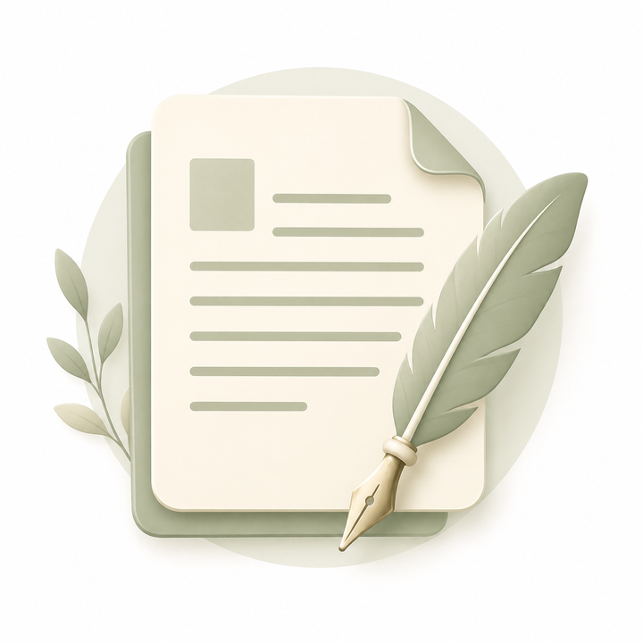

category

模糊コラム
短文を複数並べる、連載・小片・断章・ミニコラム束の置き場です。
最新3件
こかげの小窓
テーマ別の短文束をまとめたシリーズです。シリーズ一覧を見る
置き方
- テーマ単位で束ねる。
- 1 記事完結より、続きが出る前提で置く。
- 短文を並べて、読みの流れを作る。
- mini-column-bundle はこのページに載せ、個別ページは
articles/に置く。
category

短文を複数並べる、連載・小片・断章・ミニコラム束の置き場です。
テーマ別の短文束をまとめたシリーズです。シリーズ一覧を見る
articles/ に置く。